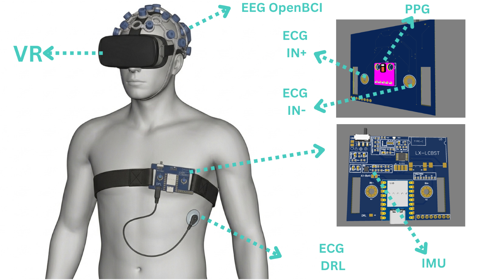
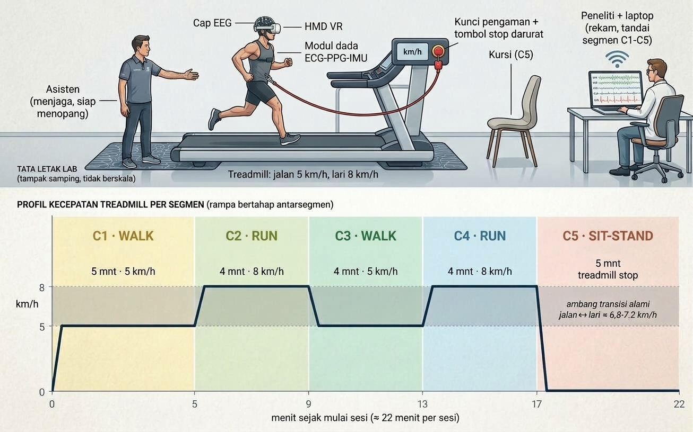
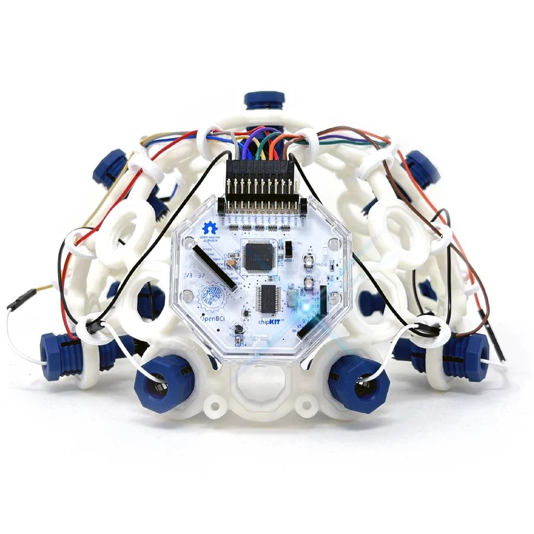
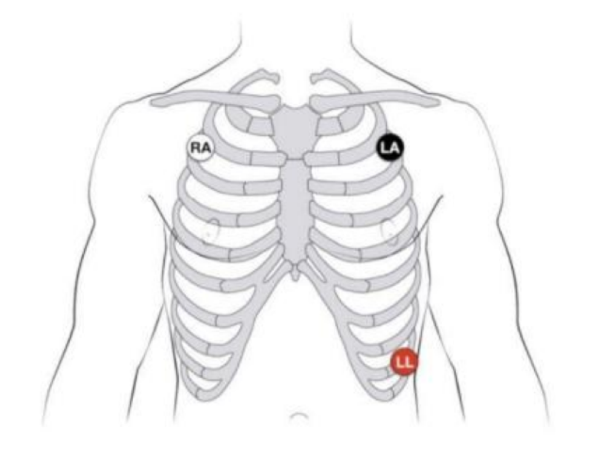
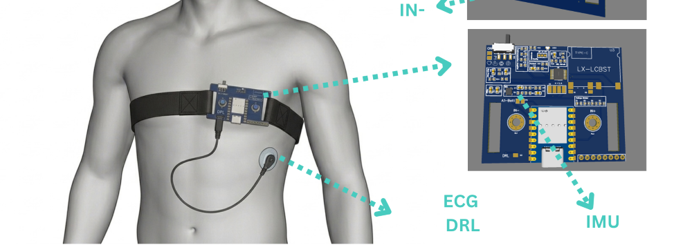
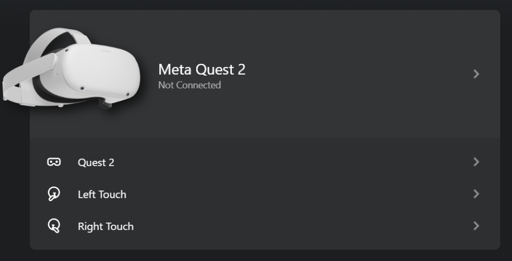
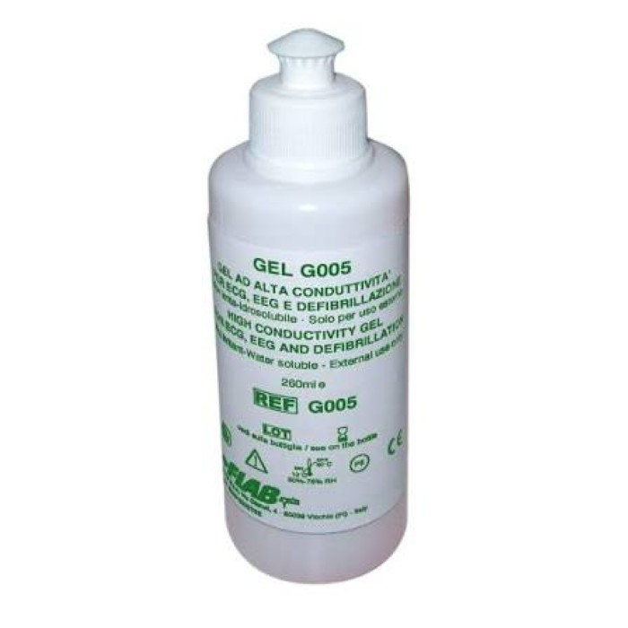

Pusing saat memakai VR? Bantu kami mengukurnya.
Penelitian Magister Teknik Biomedis UGM merekam sinyal otak, jantung, denyut nadi, dan gerak tubuh saat Anda berjalan dan berlari di treadmill, lalu duduk–berdiri, dengan dan tanpa headset VR. Hasilnya dipakai untuk membangun sistem yang mendeteksi cybersickness secara objektif.
- 30 mahasiswa baru usia 18–25 tahun
- Sekitar 90–100 menit per orang
- Transport Rp30.000, Makan, dan air minum
Izin etik: No. (, ).
Ilustrasi sinyal simulasi, bukan data rekaman.
Apa yang direkam, dan untuk apa
Cybersickness adalah rasa pusing, mual, dan tidak nyaman yang bisa muncul saat memakai VR. Selama ini tingkatnya hanya diukur lewat kuesioner. Kami ingin tahu apakah sinyal tubuh bisa menjawabnya lebih objektif.

- EEGAktivitas listrik otak lewat 8 elektroda kering di kulit kepala. Klip telinga menjadi referensi.
- ECGAktivitas listrik jantung lewat 3 elektroda di dada.
- PPGDenyut nadi lewat sensor optik pada modul yang menempel di dada.
- IMUGerak dan kemiringan tubuh, dari modul dada yang sama.
Keempat sinyal direkam bersamaan dan disinkronkan. Tingkat pusing ditentukan dari kuesioner SSQ yang Anda isi sebelum dan sesudah sesi VR.
- Subject
- 30 mahasiswa baru berusia 18–25 tahun, dibagi ke tiga kelompok BMI dengan 10 orang per kelompok. Jenis kelamin diupayakan seimbang.
Kurus < 18,5Normal 18,5–22,9BB lebih–obesitas ≥ 23,0
- Asisten lapangan
- Pendamping yang memasang alat, mendampingi subject dari belakang saat berjalan dan berlari di treadmill, serta menangani gejala ringan. Bertugas di Yogyakarta dan Boyolali.
Satu hari, dua sesi rekaman
Dari datang sampai pulang sekitar 90–100 menit. Urutan sesi (tanpa VR dan dengan VR) ditentukan peneliti, dengan jeda istirahat sampai Anda siap.
Penjelasan dan persetujuan
Anda mendapat penjelasan lengkap, boleh bertanya, lalu menandatangani Informed Consent. Pendaftaran di halaman ini bukan pengganti tanda tangan itu.
Ukur dan isi formulir
Berat dan tinggi badan diukur langsung. Anda mengisi lembar data diri, skrining kesehatan, dan kuesioner kerentanan mabuk perjalanan (MSSQ).
Pasang alat
Asisten membersihkan kulit kepala dan dada, lalu memasang EEG, ECG, dan modul dada. Gel transparan berbasis air dioles pada sensor PPG sebelum modul menempel.
Isi SSQ awal
Satu lembar gejala (16 butir, skala 0–3) sebelum sesi pertama.
Dua sesi rekaman, masing-masing sekitar 22 menit
Anda berdiri di atas treadmill dengan kunci pengaman terpasang, lalu jalan, lari, jalan, dan lari; kecepatan berubah bertahap. Di segmen terakhir treadmill berhenti dan Anda duduk–berdiri di kursi. Pada sesi VR Anda memakai headset dan melihat video; asisten berdiri di belakang Anda dan peneliti memantau.
C1Jalan · 5′5 km/jamC2Lari · 4′8 km/jamC3Jalan · 4′5 km/jamC4Lari · 4′8 km/jamC5Duduk–berdiri · 5′treadmill berhentiIsi SSQ akhir
Segera setelah sesi dengan VR selesai.
Lepas alat dan pulang
Asisten memeriksa kulit Anda dan membersihkan area pemasangan. Anda menerima kompensasi, Makan, dan air minum.

Alat yang dipasang di tubuh Anda
Pemasangan dilakukan oleh tim yang terlatih. Kalau ada yang terasa tidak nyaman, katakan saja; kami berhenti dan menyesuaikan.

EEG 8 kanal
- Elektroda kering menekan kulit kepala; rasanya seperti tekanan ringan.
- Klip telinga dipasang sebagai referensi.
- Kulit kepala dibersihkan lebih dulu dengan kapas alkohol.
- Sinyal dicek di layar sebelum rekaman dimulai.

ECG 3 elektroda
- Tiga elektroda menempel di dada.
- Area dada dibersihkan dengan kapas alkohol sebelum elektroda dipasang.
- Elektroda memakai gel; beri tahu kami bila kulit Anda sensitif terhadap gel atau plester.

Modul PPG dan IMU
- Modul kecil menempel di dada dengan strap elastis.
- Jendela sensor PPG diberi gel transparan berbasis air sebelum modul dipasang, lalu dibersihkan setelah sesi.
- Modul ini merekam denyut nadi dan gerak tubuh.

Headset VR
- Dipakai pada sesi dengan VR. Anda melihat video: awalnya diam, lalu bergerak pada segmen terakhir.
- Headset terasa berat di kepala bagi sebagian orang.
- Asisten berdiri di belakang Anda selama berjalan dan berlari di treadmill.

Gel dan kulit sensitif
- Gel dipakai di jendela sensor PPG dan pada elektroda ECG.
- Sebagian orang merasa sedikit gatal atau perih. Katakan segera, dan kami berhenti.
- Jika Anda alergi atau berkulit sensitif terhadap gel atau plester, jawab “Ya” pada pertanyaan skrining. Anda tetap bisa mendaftar; peneliti akan memeriksanya lebih dulu.
Keselamatan, hak Anda, dan kompensasi
Risikonya ringan hingga sedang. Anda boleh berhenti kapan saja, tanpa alasan dan tanpa sanksi.
Yang mungkin Anda rasakan
- Pusing, mual (pada sebagian orang sampai muntah), disorientasi, atau mata lelah saat atau setelah memakai VR. Biasanya mereda dalam beberapa menit setelah VR dilepas.
- Iritasi ringan pada kulit kepala atau dada akibat elektroda dan gel.
- Headset terasa berat dan badan lelah setelah berjalan dan berlari.
- Risiko tersandung atau jatuh di treadmill saat memakai headset. Kami menekannya dengan kunci pengaman yang menghentikan treadmill bila terlepas, tombol stop darurat, perubahan kecepatan bertahap, dan pendampingan langsung.
Kantong, obat ringan, dan waktu istirahat tersedia di lokasi.
Kompensasi
Rp30.000
- Uang transport per subject.
- Makan dan air minum selama kegiatan.
- Penanganan gejala cybersickness oleh tim.
- Tetap diberikan walau Anda berhenti di tengah sesi.
Siapa yang belum bisa ikut
Demi keselamatan Anda dan keabsahan data, kriteria ini berlaku sama untuk semua calon:
- Bukan mahasiswa baru, atau berusia di luar 18–25 tahun.
- Riwayat gangguan vestibular (mis. vertigo), epilepsi atau kejang, atau depresi.
- Cedera atau trauma kepala dalam 6 bulan terakhir.
- Sedang hamil, atau sedang menjalani terapi medis/fisik rutin yang relevan.
- Gangguan penglihatan yang belum terkoreksi.
- Kuota kelompok BMI Anda sudah penuh: Anda masuk daftar cadangan.
Data Anda
- Data diberi kode dan disimpan aman oleh tim peneliti.
- Dipakai hanya untuk penelitian dan publikasi ilmiah, tanpa identitas pribadi.
- Di formulir ini kami tidak meminta nomor rekening, KTP, atau foto.
- Jawaban yang membuat Anda belum dapat ikut tidak disimpan bersama identitas apa pun.
Daftar
Pilih peran Anda. Mengisi formulir meMakan waktu sekitar 5–7 menit.
Pertanyaan yang sering muncul
Apakah ini berbahaya?
Risikonya ringan hingga sedang, terutama pusing atau mual saat memakai VR yang umumnya mereda setelah headset dilepas. Anda didampingi sepanjang sesi dan boleh berhenti kapan saja.
Mengapa ditanya BMI, epilepsi, dan depresi?
BMI dipakai untuk membagi subject ke tiga kelompok yang seimbang. Pertanyaan epilepsi dan depresi hanya penapisan awal untuk keselamatan dan keabsahan data, bukan diagnosis. BMI di formulir ini hanya perkiraan; peneliti mengukur ulang secara langsung.
Mengapa hanya mahasiswa baru berusia 18–25 tahun?
Agar kelompok subject seragam. Kriteria ini sama untuk semua pendaftar.
Apakah saya pasti diterima setelah mendaftar?
Belum. Pendaftaran ini baru tahap awal. Peneliti akan menghubungi Anda lewat WhatsApp atau email untuk menjadwalkan, lalu skrining dan pengukuran dilakukan langsung. Jika kuota kelompok BMI Anda sudah penuh, Anda masuk daftar cadangan.
Kapan pengambilan data berlangsung?
Perkiraan pertengahan Desember 2026. Jadwal pasti dikonfirmasi lewat WhatsApp.
Mengapa ada pertanyaan tentang hijab?
Pemasangan EEG membutuhkan kontak langsung dengan kulit kepala. Bagi subject berhijab, pemasangan dilakukan oleh asisten perempuan di area tertutup. Peneliti tidak ikut mengawasi dan tidak ada foto atau video.
Bagaimana kalau saya pusing di tengah sesi?
Katakan kepada asisten. Sesi dihentikan, Anda beristirahat, dan tim menyiapkan kantong serta obat ringan. Kompensasi tetap diberikan.
Apakah mendaftar berarti saya sudah menyetujui Informed Consent?
Tidak. Persetujuan resmi berupa tanda tangan Informed Consent dilakukan pada hari pelaksanaan setelah Anda mendapat penjelasan langsung.